Week 10 — Lecture notes
Filter design
Other formats:
📄 PDFLecture outline
- Intro, motivation
- Ideal filters: lowpass, high pass, band pass, band stop, all pass.
- Realisable filter specifications
- 1st & 2nd order filters
- Audio example.
- Cascaded filters: Phono preamp. (Design example 1).
- low pass to other types.
- Higher order filters: Butterworth. 2nd order: \zeta = \dfrac{1}{\sqrt{2}}
- Design example 2.
“Filtering” a signal means removing unwanted parts of its frequency spectrum. For example:
- Ferrite beads on cables remove radio frequency interference
- Ripple filters on power supplies smooth converted AC signals
- Suspension filters out road noise/bumps.
- Rumble filters reject slow oscillations caused by warped vinyl records.
- Earthquake vibration suppression that we saw last week
- Anti-aliasing filters before converting analogue to digital.
- And many more. Any piece of electronics is full of filters.
This lecture will give an introduction to how we design filters from given specifications. This is a broad topic, there is much more to learn!
Ideal filters
An ideal filter has two characteristics:
- Perfect transmission (no distortion) of the signals we want (the “passband”).
- Perfect rejection of the signals we don’t want (the “stopband”).
There are four ideal filter types:
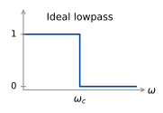
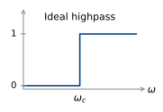
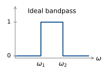
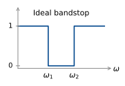
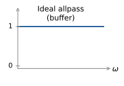
Can we build an ideal filter?
Let’s look more closely at the ideal lowpass filter. If we consider negative frequencies as well, we have
\begin{aligned} G(j\omega) &= \begin{cases} 1, & \lvert\omega\rvert < \omega_c \\ 0, & \lvert\omega\rvert > \omega_c. \end{cases} \\[10pt] &= p_{2\omega_c}(\omega) \end{aligned}
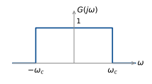
We can find the impulse response of this filter by finding the inverse Fourier transform in our table of transforms:
\begin{aligned} g(t) &= \frac{\sin(\omega_c t)}{\pi t} \\[10pt] &= \frac{\omega_c}{\pi}\,\frac{\sin(\pi T)}{\pi T} \qquad \text{where } T = \frac{\omega_c t}{\pi}. \\[10pt] &= \frac{\omega_c}{\pi}\operatorname{sinc}(T) = \frac{\omega_c}{\pi}\operatorname{sinc}\!\left(\frac{\omega_c t}{\pi}\right). \end{aligned}
\begin{aligned} \pi T &= \omega_c t \\[4pt] T &= \frac{\omega_c t}{\pi}, \qquad t = \frac{\pi T}{\omega_c} \end{aligned}
\text{So } \frac{1}{\pi t} = \frac{\omega_c}{\pi^2 T} = \frac{\omega_c}{\pi}\,\frac{1}{\pi T}
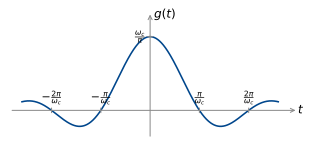
The impulse response goes backwards in time as well as forwards! No surprise, this can’t be built (unless you record the whole signal first then filter it).
Realisable filter specifications
So in practice, we need to compromise on the ideal filter characteristics of perfect transmission of the passband and perfect rejection of the stopband. A real low pass filter has an amplitude response in an allowable region:
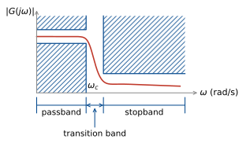
The width of the passband is also known as the bandwidth for a low pass filter. Its precise definition depends on the specification, but commonly it is the frequency where the gain first drops below -3 dB.
We have already seen many low pass filters in this course:
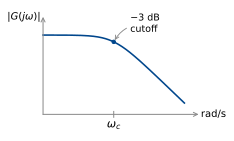
\frac{1}{j\omega + \omega_c}
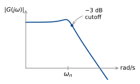
\frac{\omega_n^2}{(j\omega)^2 + 2\omega_n\zeta j\omega + \omega_n^2}
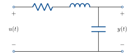
We’ve also seen high pass filters (although they have infinite gain at high frequency, which of course can’t actually be built).
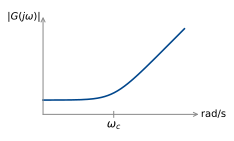
j\omega + \omega_c
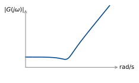
\frac{(j\omega)^2 + 2\omega_n\zeta j\omega + \omega_n^2}{\omega_n^2}
Design example 1: RIAA phono equalisation
A turntable converts a mechanical signal cut into a vinyl record into an electrical signal using a stylus and cartridge:
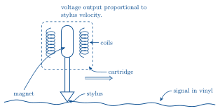
(A moving magnet style cartridge).
Low frequencies move slower, so large grooves must be cut to achieve the same stylus velocity. This reduces the length of signal that can be represented on the vinyl. For this reason, it is standard to filter the signal before cutting the vinyl, to reduce the amplitude at low frequencies. At playback, this filtering is reversed, by a phono stage. The most common specification is RIAA (Recording Industry Association of America). This specification also boosts high frequencies at recording, which are then attenuated at playback. This means surface noise (pops, clicks) are also attenuated.
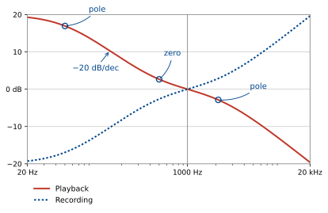
The curve is specified by three first order break frequencies:
\begin{aligned} f_1 &= 50.05\ \text{Hz} &&= 314.5\ \text{rad/s} &&(\text{pole}) \\[4pt] f_2 &= 500.5\ \text{Hz} &&= 3145\ \text{rad/s} &&(\text{zero}) \\[4pt] f_3 &= 2122\ \text{Hz} &&= 13333\ \text{rad/s} &&(\text{pole}). \end{aligned}
It is customary to normalise by setting the gain to 0 dB at 1\ \text{kHz} = 6283\ \text{rad/s}.
What is the transfer function of this filter?
We can read the poles and zeros directly from the specification:
G(j\omega) = \frac{(j\omega + 3145)\,k}{(j\omega + 314.5)(j\omega + 13333)}
To find the gain k, we substitute \omega = 6283 and find \lvert G(j\omega)\rvert. First, find the gain of each component:
\lvert(j\omega + p)\rvert = \sqrt{\omega^2 + p^2}
\left\{ \begin{aligned} &\text{pole at } 314.5\text{:} &\quad 6291.0 &= p_1 \\[4pt] &\text{pole at } 13333\text{:} &\quad 14739.2 &= p_2 \\[4pt] &\text{zero at } 3145\text{:} &\quad 7026.2 &= z_1. \end{aligned} \right.
\text{Total gain} = \frac{k z_1}{p_1 p_2} = \left(7.578\times 10^{-5}\right) k = 1
So k = 13197.
Low pass to other types
This is a lowpass filter. How do we get the highpass filter that is used before cutting the vinyl? Invert the filter:
\frac{1}{G(s)} = \frac{(j\omega + p_2)(j\omega + p_1)}{(j\omega + z_1)\,k}
In general, this method of inverting to get a highpass from a lowpass is dangerous – if the lowpass has a right half plane zero, the inverse will be unstable. A better transform is mapping s to \dfrac{1}{s}:
\frac{k(s + z_1)}{(s + p_1)(s + p_2)} \;\mapsto\; \frac{k\left(\frac{1}{s} + z_1\right)}{\left(\frac{1}{s} + p_1\right)\left(\frac{1}{s} + p_2\right)} = \frac{k\,s\,(1 + sz_1)}{(1 + sp_1)(1 + sp_2)}.
Poles and zeros map to \dfrac{1}{p}, \dfrac{1}{z}.
So, if we want a highpass filter with a particular corner frequency, we can design a lowpass filter with corner frequency \dfrac{1}{\omega_c} and then map s \mapsto \dfrac{1}{s}.
The transform s \mapsto \dfrac{1}{s} preserves stability. If p is a stable pole, so is \dfrac{1}{p}.
What about bandpass and bandstop filters, how can we build these? We can use a combination of high pass and low pass:
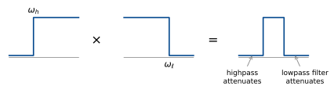
Bandpass = cascade of lowpass and highpass, \omega_h < \omega_\ell
The only signals that pass are those that are in the passband of both filters.
To get a bandstop, we want the gain in the passband to be reasonably close to 1 (0 dB). Instead of cascading, where gains multiply, we use a parallel interconnection:
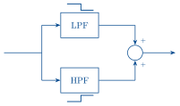
The LPF passes low frequencies. The HPF passes high frequencies. Where their stopbands overlap, no signal passes.
Butterworth filters
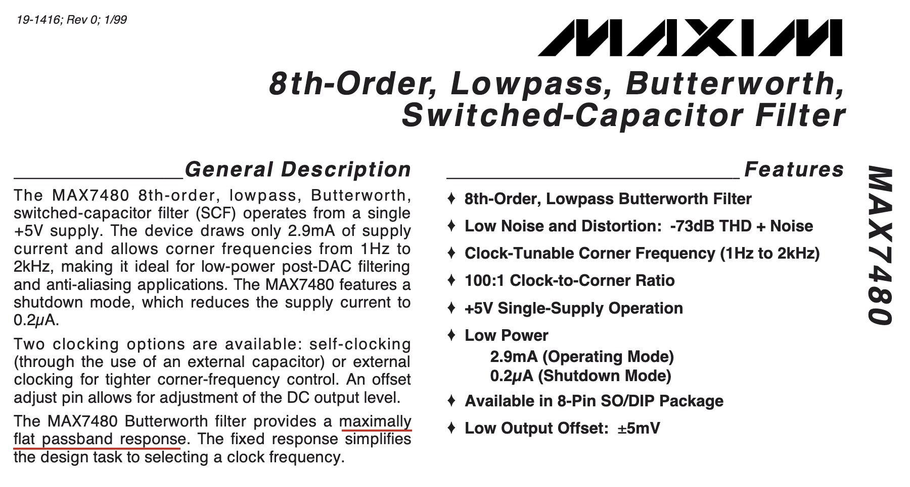
Butterworth filters are a popular practical filter design. The response is designed to have “maximally flat passband response”,1 that is, no ripples in the gain response.
An n^{\text{th}} order lowpass Butterworth filter with cutoff frequency \omega_c is the stable filter with:
- n poles
- no zeros
- magnitude response satisfies \lvert G(j\omega)\rvert^2 = \frac{1}{1 + \left(\dfrac{\omega}{\omega_c}\right)^{2n}}.
The gain is 1 at DC and \dfrac{1}{\sqrt{2}} (-3 dB) at \omega = \omega_c.
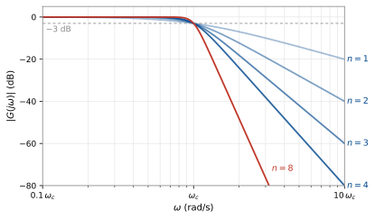
To get the desired magnitude response, we place n poles on the semicircle of radius \omega_c in the left half plane.
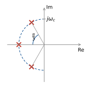
Let’s see why this works:
\lvert G(j\omega)\rvert^2 = G(j\omega)\,G(-j\omega)
\text{so } G(s)G(-s) = \frac{1}{1 + \left(\dfrac{-s^2}{\omega_c^2}\right)^n}
(note if s = j\omega, -s^2 = \omega^2).
= \frac{\omega_c^{2n}}{\omega_c^{2n} + (-s^2)^n}.
So the poles of G(s)G(-s) are the roots of
\omega_c^{2n} + (-s^2)^n = 0.
1 + \left(\frac{-s^2}{\omega_c^2}\right)^n = 0.
Setting s = \omega_c e^{j\theta} (a point on the radius \omega_c circle), we have solutions at
\theta = \frac{(2k + 1)\pi}{2n} - \frac{\pi}{2}, \qquad k = 0, 1, \ldots, 2n - 1.
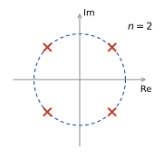
We then put all the left-half plane poles in G(s), then G(-s) has their reflections in the right half plane, so G(s)G(-s) has the right poles.
The first couple of Butterworth filters have the following transfer functions:
\begin{aligned} n = 1 &\qquad G(s) = \frac{\omega_c}{s + \omega_c} \\[12pt] n = 2 &\qquad G(s) = \frac{\omega_c^2}{s^2 + \sqrt{2}\,\omega_c s + \omega_c^2} \\[12pt] n = 3 &\qquad G(s) = \frac{\omega_c^3}{(s + \omega_c)(s^2 + \omega_c s + \omega_c^2)}. \end{aligned}
\left. \begin{aligned} n \text{ even} &\qquad G(s) = \prod_{k=1}^{n/2} \frac{\omega_c^2}{s^2 + 2\zeta_k\omega_c s + \omega_c^2} \\[12pt] n \text{ odd} &\qquad G(s) = \frac{\omega_c}{s + \omega_c}\prod_{k=1}^{(n-1)/2} \frac{\omega_c^2}{s^2 + 2\zeta_k\omega_c s + \omega_c^2} \end{aligned} \;\right\} \quad \zeta_k = \sin\!\left(\frac{(2k - 1)\pi}{2n}\right).
To get highpass filters, use the trick above: replace \dfrac{s}{\omega_c} with \dfrac{\omega_c}{s}.
Design example 2: heartrate measurement on a smartwatch
The heartrate monitor on a running watch or smartwatch uses photoplethysmography (PPG). An LED shines light into the wrist and a photodiode measures the reflection, which pulses with each heartbeat. A passband filter is used to remove both high and low frequency interference.
Passband: 30–240 bpm = 0.5 Hz to 4 Hz.
HF interference: mains power oscillates at 50 Hz, ambient light follows the square of the mains voltage at 100 Hz.
LF interference: breathing adds \approx 0.2 Hz oscillation.
How common noise and error sources affect optical biosensing
To deal with these constraints, we have the following filter specification:
- At most 3 dB loss at 0.5 Hz and 4 Hz.
- At least 20 dB attenuation at 0.2 Hz.
- At least 40 dB attenuation at 50 Hz.
Let’s draw these on a Bode diagram
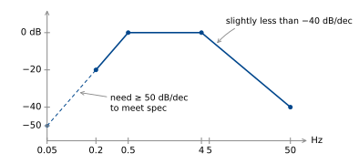
If we place Butterworth filters with \omega_h = 2\pi\times 0.5 rad/s, \omega_\ell = 2\pi\times 4 rad/s, we know we meet the -3 dB spec (this is the gain of a Butterworth at \omega_c).
We need n = 3 for the highpass and n = 2 for the lowpass.
\begin{aligned} n = 2 &\qquad G(s) = \frac{\omega_\ell^2}{s^2 + \sqrt{2}\,\omega_\ell s + \omega_\ell^2} \\[16pt] n = 3 &\qquad G(s) = \frac{\omega_h^3}{\left(\dfrac{\omega_h^2}{s} + \omega_h\right)\left(\left(\dfrac{\omega_h^2}{s}\right)^2 + \omega_h\left(\dfrac{\omega_h^2}{s}\right) + \omega_h^2\right)} \\[16pt] &\qquad\phantom{G(s)} = \frac{s^3}{(\omega_h + s)(\omega_h^2 + \omega_h s + s^2)} \end{aligned}
Footnotes
The largest possible number of derivatives of \lvert G(j\omega)\rvert^2 are zero at \omega = 0, without any transfer function zeros.↩︎